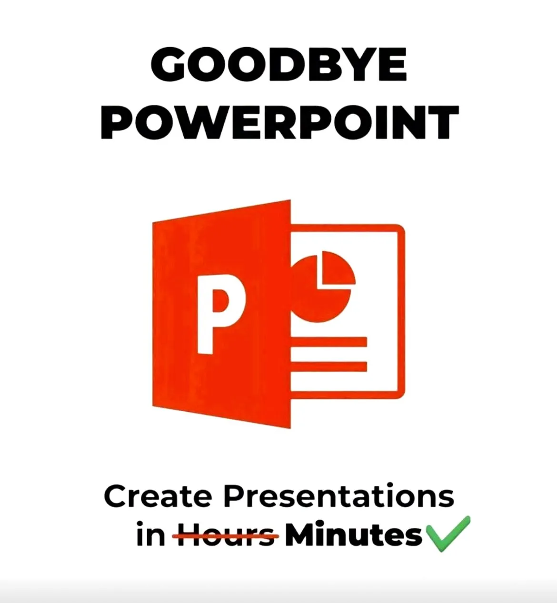

10 AI presentation tools that build decks in 60 seconds
Originally posted on LinkedIn, March 28, 2025.
AI presentation tools can now create a deck in 60 seconds or less. There is no need to spend hours on design or work through complicated tutorials. AI is changing how we build presentations, fast.
Here are 10 tools that can do it:
- Gamma creates presentations through chat or imported text. As of March 2025, it is also the most popular.
- SlideSpeak converts text into presentations.
- Tome is an AI chatbot for creating presentations, with integrations including Figma.
- Slides AI is a Google Slides add-on that creates presentations from text.
- Decktopus AI describes itself as the world’s leading engine for creating presentations with AI.
- Beautiful AI creates polished presentations in minutes.
- Presentations.AI makes it easy to create polished presentations with AI.
- Pitch is a fast, effective tool for creating attractive presentations.
- DeckRobot AI creates hundreds of PowerPoint presentations in seconds, not hours.
- Napkin AI converts text into diagrams with AI. It is one of my favorites.
Canva also offers Magic Design, which creates AI presentations in minutes.
Microsoft 365 Copilot and Google Gemini inside Google slides also offer AI tools for presentations, but they are clunky and lag behind the newer products.
